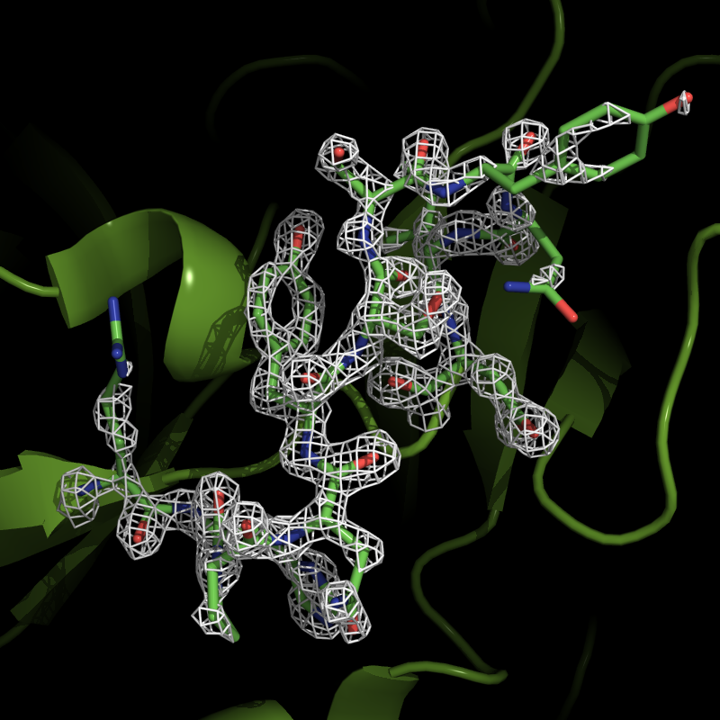

If you are working with protein structures, you might at some point be interested in the electron
density maps. The good news is that pyMol can read CCP4 maps, and can therefore display the
density. The 'bad' news is that the CCP4
maps are not provided directly in the Protein Data Bank. You can get the mmCIF files, from which
the electron density maps need to be calculated. Luckily this can be done really efficient through
the Electron Density Server hosted by the
University of Uppsala.
In this tutorial I will use Trypsin with pdb entry 1UTK. Before starting on the pyMol commands,
calculate the electron density map at the Electron Density Server.
Just enter the pdb code '1utk' and press submit. Once it is done, go to maps and calculate the 2mFo-DFc map
and selct the CCP4 format.
Open pymol and:
Get the structure from the Protein Data Bank:
PyMol> fetch 1UTK
load the electron density map (mine is called map_1utk.ccp4):
PyMol> load map_1utk.ccp4
You wont see any electron density yet, only the asymetric unit box.
Display the electron density for a selected region:
PyMol> isomesh region1, map_1utk, 2.0, i. 90-100, carve=1.6
This will generate a map countered at 2.0 sigma, around residue 90-100, within 1.6 Å of the
selected atoms. The countour level and carve parameter can of course be changed as needed.

Electron density for the residues 90 - 100.